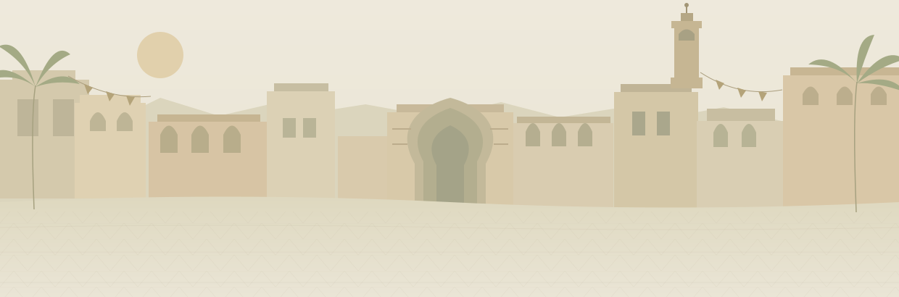
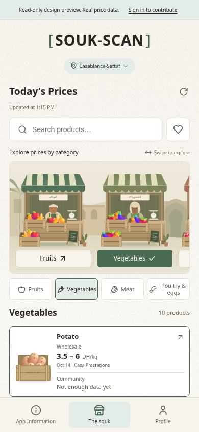

Start where you are.
Choose your Moroccan region. Get a local picture, because prices aren’t the same everywhere.
A little local knowledge goes a long way. Discover what people
are paying for everyday food, before you head to the market.

A taste of the experience.
These are sample prices, not live market data.
Real prices depend on your region and recent community reports.
Every shared price helps someone shop a little smarter.
That’s
the simple idea behind SOUK-SCAN.
Choose your Moroccan region. Get a local picture, because prices aren’t the same everywhere.
Explore recent community-reported price ranges for the everyday food on your list.
Share what you paid. Your small contribution helps build a clearer picture for everyone.
Shared prices. Private people. Your identity and exact location are never shown publicly.
Keep local food prices close. At home, on the way,
or standing right in front of the stall.
Free to explore. Available in العربية, Français & English.
Android
APK installation may require allowing this source.
On iPhone?
Use the web app in your browser.

No. SOUK-SCAN shares estimates based on what people report paying in their region. They’re a guide, not a guaranteed price. The interactive souk above uses clearly marked sample prices.
The app tells you when there aren’t enough recent reports. It doesn’t invent a price. Your contribution can help fill in the picture.
SOUK-SCAN is a price-transparency app. The stalls are an interactive way to explore food categories. There’s no checkout or delivery service.
Download the APK on your Android phone, open it, and follow the installation prompts. Your phone may ask you to allow installation from your browser. You can also use the web app without installing anything.